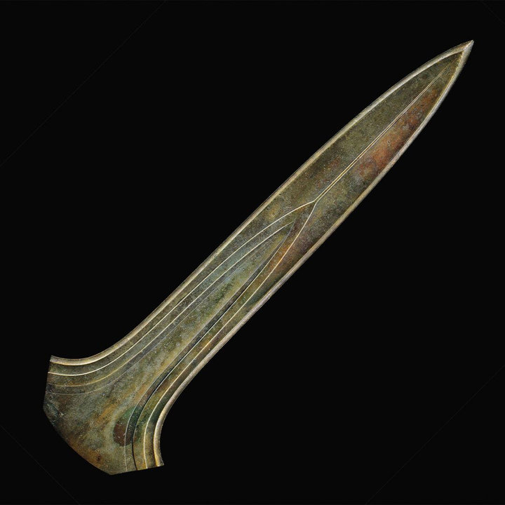

Das Schwert von Ommerschans
Das Schwert von Ommerschans zählt zu den bedeutendsten Funden der niederländischen Bronzezeit. Es wurde 1896 zusammen mit Bronzemeißeln, einem Rasiermesser und Wetzsteinen in einem Torfmoor entdeckt. Das Schwert ist über dreitausend Jahre alt, etwa 68 Zentimeter lang und schwer. Es war ungeschärft und als Waffe ungeeignet. Archäologen halten es daher für ein Zeremonialobjekt. Es gehört zu einer kleinen Gruppe von sechs sogenannten Riesenschwertern in Europa. Diese sind nahezu identisch und stammen vermutlich aus derselben Werkstatt. Die Objekte wurden absichtlich im Moor zurückgelassen, möglicherweise als Opfergabe an höhere Mächte.